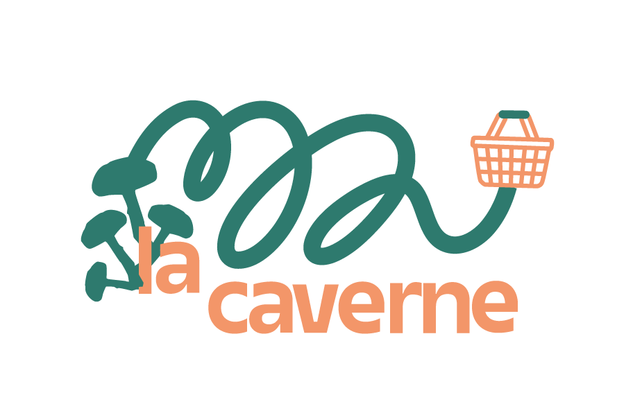
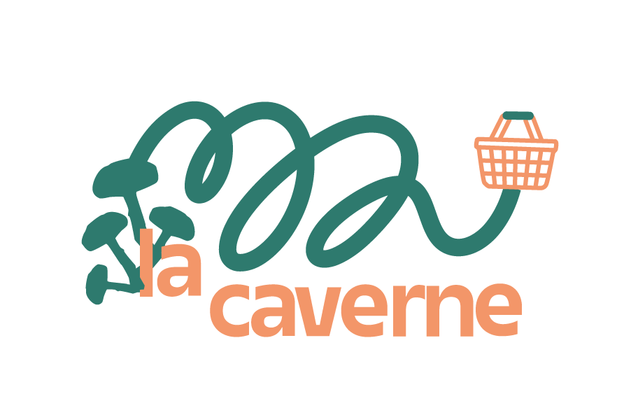

Ce projet est né d’une tasse sans anse, la tasse Muse, héritée d’un atelier familial. Elle devient le point de départ d’une identité inspirée par le geste artisanal et la poésie de l’imperfection. La direction artistique repose sur une typographie serif classique, choisie pour sa précision et son ancrage dans le temps, en écho au savoir-faire de l’atelier Muse. Le symbole de la tasse, simplifié mais volontairement vivant, assume ses légers défauts pour refléter le fait main. Une identité construite par une exploration visuelle sensible, où les choix graphiques racontent une histoire de matière, de geste.


 
